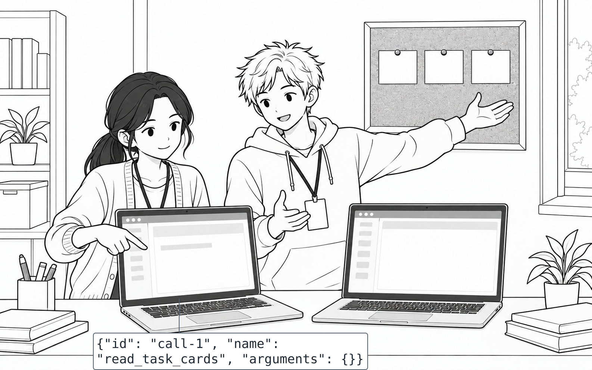
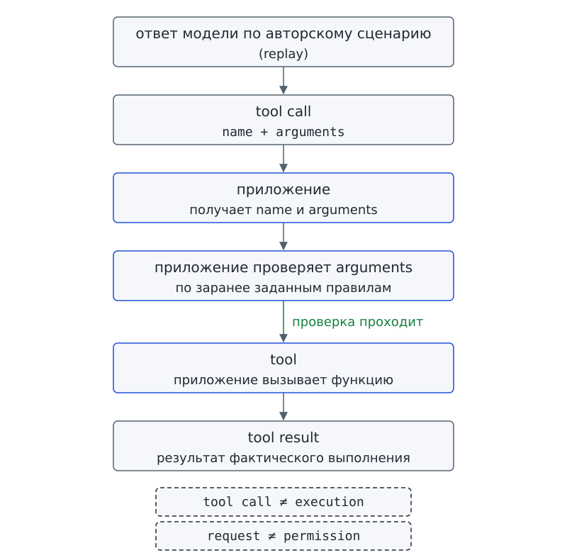
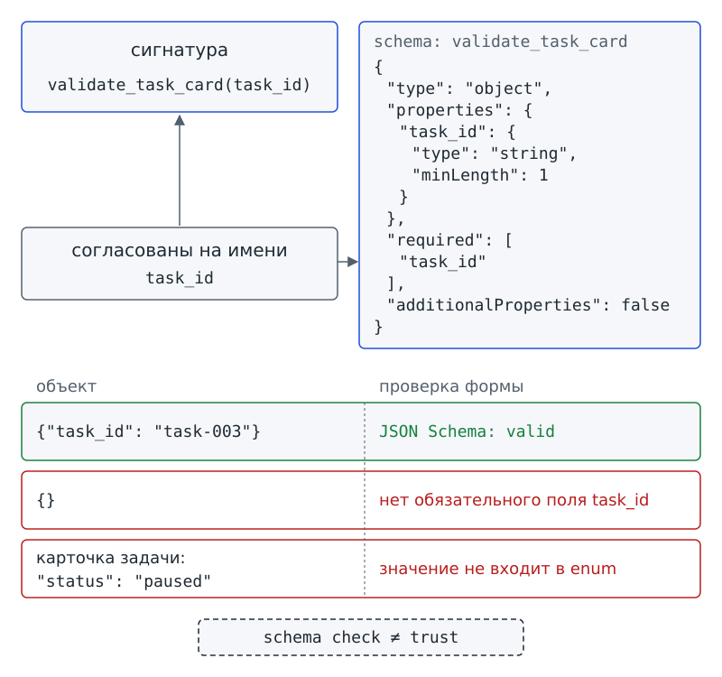

Глава 6. Первый tool¶
С чего всё началось¶
До Фестиваля науки остаётся всё меньше времени. На доске проектного бюро уже видно, зачем команде нужна программа-помощник «Дежурный». В прошлой главе ты вместе с командой договорился: «Дежурный» должен читать локальные карточки задач, проверять их и собирать черновик сводки. Изменения программа должна только предлагать, но не применять самостоятельно. Теперь Аня открывает новый учебный экран. Вместо знакомого planner_stub на экране впервые показан ответ модели по авторскому сценарию — replay.
На экране появляется одна короткая запись:
{"id": "call-1", "name": "read_task_cards", "arguments": {}}
Авторы курса подготовили показанный ответ заранее, чтобы весь класс разбирал одинаковые данные. Запись не получена от живой модели. Марк видит read_task_cards и сразу говорит:
— Ну вот. Карточки прочитаны.
Но на соседнем экране пока нет ни прочитанных карточек, ни результата операции. Видно только структурированное сообщение: имя операции и пустые фигурные скобки после arguments. Имя операции уже появилось, а результат чтения ещё не появился.
Вопрос-Прогноз. Модель вернула
{"name": "read_task_cards", "arguments": {}}. Выполнено ли действие? Если нет, какие шаги должны произойти между этим сообщением и настоящим результатом чтения карточек?
Нарисуй свою цепочку из трёх–шести блоков. Не пытайся сразу угадать все названия: отметь хотя бы, кто что делает. В конце главы ты вернёшься к своей схеме и проверишь переходы.
Главный вопрос главы. Как структурированный запрос превращается в вызов функции?

Фигура 15. Запрос уже есть — действия ещё нет
После главы ты сможешь¶
- объяснять разницу между структурированным запросом и фактическим вызовом функции;
- находить в запросе поля
nameиargumentsи сопоставлять их с операцией; - объяснять, почему имя операции в сообщении само по себе не доказывает выполнение действия;
- читать простые формальные описания структуры данных и находить обязательные поля и допустимые значения;
- объяснять, почему
Tools.read_task_cards()получает пустыеargumentsи не принимает путь от модели; - проверять корректный, неполный и граничный структурированный объект до выполнения операции;
- проходить по цепочке первого tool и на каждом переходе называть исполнителя.
Урок 11. Как модель запрашивает tool¶
1. От договора задачи к одному вызову¶
В главе 5 ты вместе с командой остановился до реализации. Технический паспорт проекта уже составлен; в паспорте определены назначения четырёх операций:
Tools.read_task_cards();Tools.validate_task_card(task_id);Tools.build_status_report();Tools.propose_status_update(task_id, new_status, reason).
Заново обсуждать договор задачи сейчас не нужно.
Как модель может попросить приложение воспользоваться одной из согласованных операций? Начнём с read_task_cards(): по договору главы 5 эта операция не принимает от модели путь к папке. Место хранения карточек задаёт само приложение.
В первых главах действие выбирал подготовленный planner_stub. Теперь вместо выбора заглушки мы впервые используем структурированный ответ, оформленный как replay («воспроизведение»). В знакомом по главе 1 starter, папке учебного комплекта, replay содержит авторский сценарий с явно указанным происхождением. Ни живая модель, ни запись работы модели в этой демонстрации не используются. Весь класс получает одинаковый вход и поэтому может сравнить наблюдения.
2. Сначала посмотрим только на запрос¶
В записи из вводной сцены поле name содержит read_task_cards, а поле arguments содержит пустой объект {}. Можно ли по имени операции решить, что функция уже сработала? Нет: запись сообщает, что просят выполнить, но ещё не показывает, что выполнили. Пока функцию запускать не будем.
Чтобы не путать просьбу с действием, дадим название механизму, с помощью которого модель передаёт такую просьбу приложению.
Function calling / tool calling — механизм, при котором модель формирует структурированный запрос на использование доступной операции.
При function calling / tool calling («вызове функции / инструмента») модель сама не открывает файл и не запускает обычную функцию программы. Модель формирует данные: какую операцию просит использовать и что предлагает передать при вызове. Получив запрос, приложение решает, как поступить в пределах заданных ограничений.
Название tool calling может сбить с толку: речь идёт не о самой функции Python и не о событии «действие выполнено». Механизм описывает, как модель формирует структурированный запрос. Фактически операцию выполняет приложение или его runtime, среда выполнения из главы 3.
Проверь себя на ходу. На экране есть
name: read_task_cards, но результата выполнения ещё нет. Какой факт уже доказан, а какой ещё нет?
3. Как устроен запрос модели¶
Просьбу модели приложение должно прочитать без догадок. Поэтому в объекте запроса сведения распределены по трём полям:
idпомогает отличить один запрос от другого.nameсодержит имя запрошенной операции.argumentsхранит данные конкретного вызова.
Tool call — структурированное описание запрошенного вызова: имя операции и аргументы.
Tool call («запрос вызова инструмента») можно сравнить с заявкой в мастерскую: в заявке написано, какую работу просят выполнить и с какими данными. Но заявка не доказывает, что мастер уже взял инструмент и сделал работу. На этом сходство заканчивается. В программе tool call содержит структурированные данные, а не бумажный документ; разрешает и выполняет действие приложение.
В нашем первом примере приложение читает имя операции из name, а из arguments получает данные вызова. Слово name означает «имя» и здесь служит названием поля объекта.
4. Arguments: данные одного вызова¶
Вернёмся к данным запроса read_task_cards(). В сцене напечатано:
"arguments": {}
На первый взгляд пустые скобки можно принять за пропуск: не забыли ли указать путь? Нет, по договору операции модель вообще не передаёт данных для этого вызова. Пустой объект {} как раз соответствует договору.
Arguments / аргументы — данные, которые передаются tool при конкретном вызове.
Arguments («аргументы») содержат только значения для одной операции при конкретном вызове. У validate_task_card(task_id) таким значением будет task_id. У read_task_cards() arguments пусты.
Не смешивай arguments со входом всей задачи из главы 5 или с активным контекстом модели из главы 3. Вход проекта может включать много карточек и правила работы, а контекст может содержать историю и другие данные. В arguments попадают лишь данные конкретного tool call.
Допустим, бюро обсуждает несколько карточек, но сейчас просит проверить только одну. В arguments validate_task_card(task_id) передают task_id выбранной карточки, а не весь разговор бюро. Пример показывает разницу между сведениями, доступными модели, и данными одного вызова.
5. Кто действительно выполняет действие¶
Что появится у приложения, когда операция действительно завершится? Приложение получит результат выполненной операции. Такой результат уже отличается от просьбы модели: действие произошло, и после выполнения вернулись данные.
Tool result — результат фактического выполнения tool, возвращённый в агентную систему.
Tool result («результат инструмента») содержит данные, которые вернулись после фактического выполнения операции. Дальше agent loop, агентный цикл, может использовать tool result как часть observation, наблюдения, и выбирать следующий шаг. При этом tool result и observation не обязаны быть одним и тем же объектом.
Результат одного действия ещё не означает, что весь проект завершён. Отсутствие ошибки в одном tool ещё не доказывает success, то есть успешное завершение всей задачи.
Сопоставим запрос, вызов и результат на одной схеме. У каждого перехода есть исполнитель:
ответ модели по авторскому сценарию (replay)
↓
tool call
name + arguments
↓
приложение проверяет
arguments по заранее заданным правилам
↓
в корректном учебном сценарии
приложение вызывает функцию
↓
tool
↓
tool result
↓
дальше может стать observation
Первая стрелка начинается с подготовленного ответа модели: в replay уже содержится структурированный запрос. Приложение получает name и arguments, но ещё не вызывает функцию. Сначала приложение проверяет arguments. Если проверка проходит и остальные ограничения приложения позволяют продолжить, приложение вызывает заранее предусмотренную функцию.
В подписях request означает «запрос», а trust означает служебную отметку доверия, знакомую по главе 4.
На полях схемы запиши три границы:
tool call ≠ выполненное действие
request ≠ permission
проверка формы ≠ trust
Слово permission означает «разрешение» и уже знакомо по главе 3. Запрос модели не создаёт права на действие, а проверка данных не заменяет разрешения. К полному механизму разрешения нескольких операций мы перейдём дальше.

Фигура 16. Цепочка tool calling
6. Практика A: четыре роли и одна заявка¶
Работайте в группе из четырёх человек. Распределите роли:
- Участник-модель получает бумажную карточку tool call.
- Участник-приложение принимает запрос.
- Участник-tool выполняет операцию
read_task_cards. - Наблюдатель записывает, что действительно произошло.
Участник-модель передаёт участнику-приложению карточку:
{"id": "call-1", "name": "read_task_cards", "arguments": {}}
После передачи карточки выполните следующие шаги:
- Остановитесь. Наблюдатель записывает: «запрос получен, действие ещё не выполнено».
- Участник-приложение передаёт сигнал участнику-tool. Передать сигнал может только участник-приложение.
- Участник-tool читает заранее подготовленные бумажные карточки и возвращает число найденных записей.
- Наблюдатель отдельно фиксирует: «получен результат выполнения».
Поменяйтесь ролями и повторите цепочку. Если кто-то перешёл от карточки tool call сразу к результату, вернитесь на один шаг назад и назовите исполнителя пропущенного действия.
Результат практики A: схема цепочки с подписью исполнителя каждого перехода и отдельной отметкой точки, где tool call уже есть, а действие ещё не выполнено.
7. Практика B: один и тот же запрос — два разных наблюдения¶
Теперь различие между запросом и выполнением можно увидеть в программе. В starter есть локальная демонстрация tool_call_demo.py. Программа не обращается к сети и не выдаёт авторский сценарий за работу живой модели. В выводе строка mode сообщает выбранный режим, а origin сообщает происхождение replay. Значение synthetic_script означает подготовленный учебный сценарий.
Как и в главе 1, выполняй команды ниже из корня starter, то есть из самой папки учебного комплекта.
Под каждой командой приведён stdout, стандартный вывод: текст, который программа печатает в терминал, знакомое по главе 1 окно запуска. В служебной строке execution значение not performed означает «не выполнено», а performed by application означает «выполнено приложением».
Сначала запусти режим, который показывает запрос без выполнения. Перед запуском предскажи, появится ли строка tool result.
# запуск из корня starter
python tool_call_demo.py show
mode: replay
origin: synthetic_script — авторский сценарий, не запись модели
tool call: {"id": "call-1", "name": "read_task_cards", "arguments": {}}
execution: not performed
В строке execution напечатано not performed: программа показала tool call, но функцию не вызывала. Утверждение Марка «Карточки прочитаны» пока не подтверждается. На экране есть запрос, а выполнения нет.
Во втором режиме перед вызовом функции появится ещё одна строка: программа сообщит результат проверки данных запроса. Формат JSON уже знаком по главе 1. Однако корректной записи в формате JSON недостаточно: для конкретного вызова нужно ещё описать допустимую структуру и значения.
JSON Schema — способ формально описать ожидаемую структуру JSON-данных и допустимые значения.
JSON Schema («схема JSON») задаёт правила, по которым программа проверяет форму данных: разрешённые и обязательные поля, а также допустимые значения. В уроке 12 ты разберёшь правила по частям.
Успешная проверка формы не доказывает правдивость данных, не назначает доверие и не выдаёт permission на выполнение.
Слово valid в строке проверки означает, что объект соответствует описанной форме.
Запусти режим, в котором приложение обрабатывает корректный запрос и выполняет операцию. Replay-вход останется прежним: запрос read_task_cards с пустыми arguments. До запуска спрогнозируй, какая новая строка появится после проверки arguments.
# запуск из корня starter
python tool_call_demo.py execute
mode: replay
origin: synthetic_script — авторский сценарий, не запись модели
tool call: {"id": "call-1", "name": "read_task_cards", "arguments": {}}
JSON Schema: valid
execution: performed by application
tool result: {"ok": true, "count": 3, "trust": "untrusted", "assigned_by": "harness"}
Сравни stdout двух запусков. В выводе show есть запрос и строка execution: not performed. В выводе execute после проверки появляется execution: performed by application, а затем tool result.
Поле count сообщает число прочитанных карточек: в приведённом выводе execute прочитаны три карточки. В выводе show результата чтения вообще нет. Значение untrusted означает «недоверенные данные». Поля trust: untrusted и assigned_by: harness напоминают прежнее правило: доверие назначает среда приложения, а не сама карточка.
Что доказывают два запуска? В этой локальной демонстрации показ tool call отделён от выполнения операции, а происхождение replay объявлено прямо. Как повела бы себя живая модель, по авторскому сценарию судить нельзя.
Результат практики B: два сохранённых наблюдения show и execute и короткое объяснение, по какой строке видно, что действие действительно произошло только во втором запуске.
8. Мини-проверка урока 11¶
- Кто формирует tool call в механизме tool calling?
- Кто фактически вызывает обычную функцию программы в нашей архитектуре?
- Что находится в
argumentsуread_task_cards()? - Чем tool call отличается от tool result?
- Доказывает ли
origin: synthetic_script, что это запись живой модели?
Ответы¶
- Модель формирует структурированный запрос; в обязательной практике главы это ответ по авторскому сценарию replay.
- Функцию вызывает приложение, а не модель.
- Пустой объект
{}, потому что путь и другая конфигурация этой операции не приходят от модели. - Tool call описывает запрошенный вызов, tool result появляется после фактического выполнения операции.
- Нет. Наоборот, строка прямо сообщает об авторском сценарии, а не о записи живой модели.
Выходной билет урока 11¶
Закончи три строки без подглядывания:
tool calling — это …
tool call — это …
tool result появляется после …
Ниже подпиши центральную границу:
tool call ≠ выполненное действие
Если вместо знака неравенства хочется поставить знак равенства, вернись к двум запускам show и execute. Найди строку, по которой различается состояние выполнения.
Урок 12. Параметры как договор¶
1. Почти одинаковые имена — разные данные¶
На следующий день Марк готовит tool call для проверки одной карточки. В карточке номер записан в поле id, и Марк переносит знакомое имя в запрос:
{
"id": "call-bad",
"name": "validate_task_card",
"arguments": {
"id": "task-003"
}
}
По записи можно понять, какую карточку Марк хочет проверить. Возникает естественная догадка: раз смысл ясен, приложение могло бы заменить id на нужное имя. Но договор операции из главы 5 уже задаёт точное имя параметра: Tools.validate_task_card(task_id). Функция ожидает task_id, а не id. Если приложение начнёт молча переименовывать любые похожие поля, проверяемый договор будет заменён догадкой.
Итак, синтаксически правильной записи JSON, формата данных из главы 1, недостаточно. Нужны ещё правила: какую структуру arguments приложение ожидает и какие значения принимает.
2. Что именно проверяет JSON Schema¶
Почему JSON с полем id не подошёл, хотя запись читается без труда? Формат задаёт способ записи, а схема задаёт требования к конкретным данным. В главе 1 ты уже видел карточки проекта в формате JSON. Теперь в формате JSON записаны и запросы операции, и схемы для проверки. JSON Schema из конца урока 11 позволяет сравнить запрос с заранее описанными требованиями.
В starter используется учебное подмножество JSON Schema: не весь стандарт, а только возможности, которые поддерживает учебная проверка.
Читай ключи схемы как отдельные правила:
typeзадаёт вид значения. В приведённых схемах используются:object— объект с именованными полями;string— текстовая строка;array— список значений.propertiesперечисляет поля объекта и описывает требования к их значениям.requiredназывает поля, без которых объект не принимается.enumразрешает только одно из перечисленных значений.additionalProperties: falseзапрещает дополнительные поля, не описанные в схеме.minLengthзадаёт минимальную длину строки.itemsописывает требования к элементам списка.
В наших схемах properties нужно читать вместе с additionalProperties: false: одно правило описывает поля, другое запрещает добавлять остальные.
Проверь себя на ходу. Schema разрешает
task_id, но в tool call пришло полеid. Может ли приложение молча переименовать его «потому что смысл понятен»? Почему?
3. Schema для read_task_cards()¶
Какая схема подойдёт операции, которой модель не передаёт никаких аргументов? Посмотрим на read_task_cards(). Запусти команду, которая печатает фрагмент единственного файла схем starter — data/tool_schemas.json.
# запуск из корня starter
python tool_call_demo.py schema read_task_cards
schema: read_task_cards
{
"type": "object",
"properties": {},
"required": [],
"additionalProperties": false
}
Схема требует объект, но properties не описывает ни одного поля. Список required тоже пуст, а additionalProperties: false запрещает добавлять поля. Поэтому пустой объект {} проходит проверку. Объект {"path": "workspace/tasks"} уже не проходит: поле path не разрешено.
Проверка технически закрепляет решение из главы 5: расположение карточек задаётся конфигурацией приложения. Модель может напечатать путь, но такая запись не расширяет возможности операции.
4. Schema для validate_task_card(task_id)¶
Для проверки одной карточки пустого объекта уже недостаточно: операции нужен task_id. Запусти команду и посмотри, как требование записано в схеме.
# запуск из корня starter
python tool_call_demo.py schema validate_task_card
schema: validate_task_card
{
"type": "object",
"properties": {
"task_id": {
"type": "string",
"minLength": 1
}
},
"required": [
"task_id"
],
"additionalProperties": false
}
Сопоставим Tools.validate_task_card(task_id) со схемой. Запись имени функции и её параметров называют сигнатурой. В сигнатуре указан task_id, и схема требует именно поле task_id. Значение должно быть строкой; правило minLength: 1 не допускает пустой строки.
Поле id из примера Марка не заменяет task_id, даже если человек понимает намерение автора запроса. Согласованное имя позволяет приложению проверить запрос без переименований по догадке.
5. Schema самой карточки задачи¶
В запросе на проверку карточки требуется task_id, а в самой карточке номер записан как id. Противоречия нет: arguments операции и карточка содержат разные данные и проверяются по разным схемам. Схема карточки тоже хранится в data/tool_schemas.json. Выведи схему целиком.
# запуск из корня starter
python tool_call_demo.py schema task_card
schema: task_card
{
"type": "object",
"properties": {
"id": {
"type": "string",
"minLength": 1
},
"title": {
"type": "string",
"minLength": 1
},
"status": {
"type": "string",
"enum": [
"planned",
"in_progress",
"blocked",
"done"
]
},
"team": {
"type": "string"
},
"blockers": {
"type": "array",
"items": {
"type": "string"
}
},
"notes": {
"type": "string"
}
},
"required": [
"id",
"title",
"status"
],
"additionalProperties": false
}
Схема описывает шесть полей, но требует только три. Поля делятся на две группы:
id,title,statusобязательны.team,blockers,notesразрешены, но могут отсутствовать.
Для status подходят только четыре значения, знакомые по карточкам проекта:
planned;in_progress;blocked;done.
Проверка формы не устанавливает, правдив ли заголовок карточки, надёжен ли автор записи и можно ли использовать содержимое как инструкцию для модели.
Допустим, группа внесла в title неверное название работы, но оставила непустую строку и правильно заполнила остальные поля. По напечатанной схеме карточка пройдёт проверку формы. Верность названия работы схема при этом не проверит.
Проверь себя на ходу. Карточка прошла schema-проверку: есть
id,title,status, аstatusвходит в enum. Доказывает ли это, что текст вtitleправдив и карточке можно доверять?

Фигура 17. Schema и сигнатура должны совпасть
6. Практика A: собери schema из карточек полей¶
Работайте в группе. Для validate_task_card(task_id) разложите на столе карточки type, properties, required, additionalProperties и карточку поля task_id. Соберите схему, которая разрешает ровно одно обязательное непустое строковое поле task_id. Для условия «строка не пустая» укажите minLength: 1, как в схеме операции.
Затем соберите schema карточки задачи:
- В список обязательных полей поместите
id,title,status. - Поля
team,blockers,notesоставьте разрешёнными, но необязательными. - Рядом с
statusположите четыре разрешённых значения.
Теперь намеренно внесите ошибку в схему операции: оставьте task_id в required, но уберите поле из properties. При additionalProperties: false требования противоречат друг другу: объект обязан содержать task_id, хотя схема не разрешает такое поле. Объясните другой группе, почему договор нужно исправить до проверки данных.
Результат практики A: две schema-карты — для arguments validate_task_card и для карточки задачи — и объяснение ошибки «поле есть в required, но отсутствует в properties».
7. Практика B: сначала проверяем, потом выполняем¶
В этой практике команды check не выполняют tool. При проверке структуры arguments программа печатает execution: not performed. Сначала проверь случай, когда ученический файл ещё не создан.
# запуск из корня starter
python tool_call_demo.py check workspace/drafts/ch06_tool_call.json
ошибка: файл не создан: workspace/drafts/ch06_tool_call.json
подсказка: скопируй workspace/ch06/templates/tool_call.json и впиши свой task_id
Вместо traceback, технического отчёта об ошибке программы, показаны причина и подсказка. Сообщение не выдаёт отсутствие файла за частичный успех.
- Скопируй
workspace/ch06/templates/tool_call.jsonвworkspace/drafts/ch06_tool_call.json. - Впиши свой
task_id. - До запуска предскажи результат проверки.
- Выполни следующую команду.
Как и в главе 4, фикстура означает заранее подготовленный файл, который на время проверки подставляют на место твоего. Строка с фикстурой поясняет происхождение напечатанного ниже вывода: там использован task-003. В своём запуске вводи только строку с python; значение task_id будет зависеть от того, что ты вписал в файл.
# запуск из корня starter
# фикстура: tests/fixtures/ch06/tool_call_valid.json -> workspace/drafts/ch06_tool_call.json
python tool_call_demo.py check workspace/drafts/ch06_tool_call.json
tool: validate_task_card
arguments: {"task_id": "task-003"}
JSON Schema: valid
execution: not performed
Структура arguments прошла проверку, но строка execution: not performed сообщает, что функция не запущена. Успешная проверка данных и выполнение остаются разными событиями.
В следующих выводах invalid означает несоответствие проверяемой форме. Строка reason сообщает первую обнаруженную причину.
Запусти проверку неполного запроса: в arguments отсутствует task_id.
# запуск из корня starter
python tool_call_demo.py check workspace/ch06/cases/validate_missing_task_id.json
tool: validate_task_card
arguments: {}
JSON Schema: invalid
reason: arguments: нет обязательного поля task_id
execution: not performed
Проверка сообщает, какого обязательного поля не хватает, до вызова функции. Приложению не нужно просить модель «догадаться», какое поле было забыто.
Следующей командой проверь границу read_task_cards(): запрос пытается передать путь.
# запуск из корня starter
python tool_call_demo.py check workspace/ch06/cases/read_with_path.json
tool: read_task_cards
arguments: {"path": "workspace/tasks"}
JSON Schema: invalid
reason: arguments: лишнее поле path
execution: not performed
JSON записан синтаксически правильно, и путь выглядит правдоподобно. Однако договор операции не разрешает поле path. Удобная запись пути не меняет контракт.
Затем проверь три карточки задачи. Первая карточка соответствует schema.
# запуск из корня starter
python tool_call_demo.py check-card workspace/ch06/cards/card_valid.json
card: sample-valid
JSON Schema: valid
Во второй карточке отсутствует обязательное поле status. Запусти проверку:
# запуск из корня starter
python tool_call_demo.py check-card workspace/ch06/cards/card_missing_status.json
card: sample-missing-status
JSON Schema: invalid
reason: card: нет обязательного поля status
В третьей карточке поле status присутствует, но значение не входит в список допустимых. Проверь результат:
# запуск из корня starter
python tool_call_demo.py check-card workspace/ch06/cards/card_bad_status.json
card: sample-bad-status
JSON Schema: invalid
reason: card.status: значение не входит в enum
Три проверки карточек дали три разных результата:
- Корректная структура принята.
- Отсутствие обязательного поля обнаружено.
- Значение вне разрешённого набора отклонено.
Программа сообщает результат проверки, а не пытается молча «починить» объект.
Результат практики B: собственный workspace/drafts/ch06_tool_call.json, прогноз до проверки и таблица из пяти наблюдений:
- корректный вызов;
- неполные arguments;
- запрос с запрещённым
path; - корректная карточка;
- один из двух разобранных отрицательных примеров карточки.
8. Обязательные проверки: должен / не должен / ошибка / граница¶
Должен¶
Корректный запрос validate_task_card с {"task_id": "task-003"} должен пройти JSON Schema-проверку. Карточка с обязательными полями и допустимым status, которая соответствует остальным требованиям схемы, тоже должна быть принята по форме.
Не должен¶
Режим show не должен выполнять read_task_cards(). Наличие tool call не означает, что runtime получил команду «выполни немедленно», и не доказывает, что tool result уже существует.
Ошибка¶
Если отсутствует обязательный task_id или обязательное поле карточки, программа должна явно сообщить причину. Неполный объект не должен превращаться в частично успешный вызов.
Граница¶
read_task_cards() не принимает путь от модели. Поэтому объект {"path": "workspace/tasks"} отклоняется из-за лишнего поля. Карточка с status="paused" может быть записана синтаксически корректным JSON, но значение paused не входит в enum и не проходит schema-проверку.
9. Врезка безопасности: правильная форма не равна разрешению¶
Безопасность
tool call ≠ permission. Корректный запрос модели сам по себе не даёт права на действие.
JSON Schema valid ≠ trusted data. Schema проверяет структуру, но не правдивость и не происхождение содержимого. Доверие к карточкам по-прежнему назначает harness, а не поле внутри данных.
model-supplied path ≠ allowed configuration. Если контракт операции не принимает путь от модели, наличие строкиpathв JSON не меняет допустимую конфигурацию и не расширяет полномочия операции.
Проверка формы запроса и выполнение операции остаются независимыми ступенями. Сначала приложение проверяет форму запроса и только потом, в допустимом сценарии, выполняет вызов. Чтобы связать имя tool только с разрешённой реализацией и обработать неизвестное имя, нужен ещё один механизм. К полному механизму такого связывания мы перейдём дальше.
10. Мини-проверка урока 12¶
- Что описывает JSON Schema в этой главе?
- Почему поле
idне заменяетtask_idавтоматически? - Что означает
additionalProperties: falseв schemaread_task_cards? - Какие поля карточки обязательны?
- Какие значения
statusдопустимы? - Что доказано, если карточка получила
JSON Schema: valid?
Ответы¶
- Ожидаемую структуру JSON-данных и допустимые значения, которые программа может формально проверить.
- Потому что контракт функции и schema ожидают конкретное имя
task_id; приложение не должно угадывать переименование. - Что любые поля сверх перечисленных запрещены; поскольку
propertiesпуст, корректные arguments —{}. id,title,status.planned,in_progress,blocked,done.- Только соответствие проверяемой структуре; это не доказательство истинности, доверия или разрешения на действие.
Выходной билет урока 12¶
Заполни четыре строки:
required отвечает за …
properties отвечает за …
enum ограничивает …
JSON Schema valid не доказывает …
Рядом с Tools.validate_task_card(task_id) напиши имя поля, обязательного в arguments. Если ты написал id, вернись к schema и сравни имя поля с параметром в сигнатуре.
Домашняя работа¶
Придумай один дополнительный отрицательный пример для schema карточки задачи. Не повторяй разобранные случаи «нет status» и status="paused". Запиши объект. Затем добавь одну строку прогноза: какое конкретное правило schema нарушено. На следующем занятии сосед должен суметь проверить твой прогноз без устного пояснения.
Полная карта первого tool¶
Как соединить проверку данных и выполнение в одну цепочку, не смешав разные события? На полной карте первого tool каждый переход показан отдельно. По карте можно проверить, модель уже сделала что-либо или только попросила выполнить действие.
ответ модели по авторскому сценарию (replay)
↓
tool call
name + arguments
↓
приложение проверяет
arguments по JSON Schema
↓
в корректном учебном сценарии
приложение вызывает функцию
↓
tool
↓
tool result
↓
дальше может стать observation
Подпиши под картой три ограничения:
tool call ≠ выполненное действие
request ≠ permission
schema check ≠ trust
В обязательных примерах имена операций заранее известны. Поэтому на карте нет отдельного блока, который сопоставлял бы произвольное имя с разрешённой реализацией. Для незнакомого имени такого перехода ещё не построено; механизм сопоставления станет следующим шагом.
Возвращаемся к сцене¶
В начале главы Марк увидел {"name": "read_task_cards", "arguments": {}} и решил, что карточки прочитаны. Как проверить догадку Марка? Теперь у нас есть два наблюдения, которые отделяют запрос от выполнения.
Режим show печатает tool call и execution: not performed: запрос существует, но результата операции нет. Режим execute получает тот же replay-вход — запрос чтения карточек с пустыми arguments. Приложение проверяет arguments, затем выполняет функцию, и в выводе появляется tool result.
Марк принял описание желаемого действия за само действие. Модель может сформировать запрос, но запрос ещё не подтверждает выполнения. Приложение получает запрос, проверяет данные и только затем, в допустимом сценарии, выполняет операцию. Tool result появляется после выполнения, а не после появления имени функции в тексте.
Вернись к своему вопросу-прогнозу. Проверь, есть ли в твоей цепочке tool call, проверка arguments, приложение как исполнитель вызова и tool result. Если на рисунке модель соединена с файлом напрямую, исправь схему: фактическое действие выполняет приложение и его runtime.
Зачем это тебе¶
-
Представь программу для лабораторной работы: программа проверяет запись измерения перед добавлением в общую таблицу. Даже если запись оформлена как JSON, отсутствие обязательного поля должно быть обнаружено до дальнейшей обработки. Schema позволяет заранее записать требования к форме данных, а не обсуждать требования уже после ошибки.
-
В командном проекте один участник называет идентификатор
id, а другой написал функцию с параметромtask_id. Человек может догадаться, что оба имени относятся к одной карточке, но программа получает разные имена. Явная schema показывает несовпадение до того, как неправильные данные будут использованы дальше. -
При работе с файлами чат может напечатать: «прочитай папку по пути
...». Сначала проверь не правдоподобие пути, а договор операции: разрешено ли вообще получать путь от модели? Дляread_task_cards()в нашем проекте ответ отрицательный. Расположение данных задаёт приложение.
Шаг сквозного проекта¶
После главы 5 у «Дежурного» был договор задачи. После главы 6 к договору добавляются два проверяемых проектных артефакта.
Первый артефакт описывает read_task_cards: модель может запросить операцию, но не передаёт путь; корректные arguments равны {}. Приложение выполняет фактический вызов, а tool result сообщает результат чтения.
Второй артефакт задаёт schema arguments для read_task_cards() и validate_task_card(task_id), а также schema синтетической карточки задачи. Schema arguments и schema карточки хранятся в одном источнике — data/tool_schemas.json.
Теперь проверь, может ли команда пройти по схеме replay → tool call → проверка arguments → вызов функции приложением → tool result и назвать исполнителя каждого перехода. Затем объясни вместе с командой, почему лишний path, отсутствующий task_id и недопустимый status не проходят проверку до дальнейшего использования данных.
Пока не готовы общий механизм работы с несколькими именами, обработка неизвестного tool и управляемая обработка ошибок выполнения. К этим задачам мы перейдём в следующей главе.
Достраиваем «Дежурног
Файла главы 6 в my_agent/ нет. Контракт read_task_cards хранится в самом harness и не настраивается учеником; допустимые arguments равны {}. Полная schema для пустых arguments приведена в уроке 12: схема требует объект без полей.
Поэтому путь к карточкам по-прежнему не приходит от модели ни в одной конфигурации, а команда status не печатает строки главы 6. Настройки твоего конструктора не добавляют операции новый аргумент и не меняют установленную границу.
Проверь себя¶
- Что такое Function calling / tool calling и чего этот механизм сам по себе не выполняет?
- Что такое tool call?
- Что такое arguments и почему они не равны всему контексту модели?
- Кто фактически вызывает функцию в нашей учебной цепочке?
- Когда появляется tool result?
- Что описывает JSON Schema и чего она не доказывает?
- Почему
read_task_cards()принимает{}, а{"path": "workspace/tasks"}отклоняется? - Почему
validate_task_cardждётtask_id, а неid? - Чем replay главы отличается от записи живой модели?
Ответы¶
- Это механизм, при котором модель формирует структурированный запрос на использование доступной операции. Сам по себе он не выполняет функцию.
- Структурированное описание запрошенного вызова: имя операции и arguments.
- Arguments — данные конкретного вызова tool; контекст модели может быть намного шире.
- Приложение. Модель формирует запрос, но действие выполняет программная сторона.
- После фактического выполнения tool и возврата результата в агентную систему.
- Ожидаемую структуру JSON-данных и допустимые значения. Успешная проверка не доказывает правдивость, доверие, безопасность или permission.
- Таков принятый контракт операции: путь хранится в конфигурации приложения и не приходит от модели; дополнительные поля schema запрещает.
- Потому что сигнатура операции и schema согласованы на имени
task_id; молчаливое переименование разрушило бы проверяемый договор. - Replay здесь — авторский сценарий с меткой происхождения
synthetic_script; он не выдаётся за запись или измерение поведения живой модели.
Словарь главы¶
| Термин | Рабочая формулировка |
|---|---|
| Function calling / tool calling | механизм, при котором модель формирует структурированный запрос на использование доступной операции |
| Tool call | структурированное описание запрошенного вызова: имя операции и аргументы |
| Arguments / аргументы | данные, которые передаются tool при конкретном вызове |
| Tool result | результат фактического выполнения tool, возвращённый в агентную систему |
| JSON | текстовый формат представления структурированных данных |
| JSON Schema | способ формально описать ожидаемую структуру JSON-данных и допустимые значения |
Мост к главе 7¶
Теперь ты можешь найти name и arguments, проверить структуру запроса и по наблюдаемому результату отличить просьбу от выполненного действия. Но все разобранные операции были заранее известны. Что произойдёт, если в name появится неожиданное имя? Проверки формы для ответа недостаточно: приложению ещё нужен способ связать имя с разрешённой функцией.
В следующей главе мы добавим механизм связывания и обработку ошибок. Уже построенная цепочка tool call → проверка → выполнение → tool result при этом сохранится.
Следующий вопрос. Как безопасно связать имя tool с разрешённой функцией?
Ответ ты найдёшь в главе 7, «Диспетчер и ошибки».